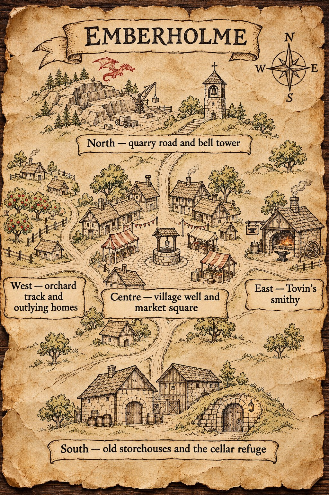

You have been sent to defend a farming village from a red dragon. You have reason to believe that two lesser red dragons are active near the old quarry, and that the larger creature's attacks may leave an unusually corrosive residue.
North: Quarry road and bell tower. Centre: Village well and market square. East: Tovin's smithy. South: Old storehouses and linked cellar refuge. West: Orchard track and several outlying homes.
People who may need you: Maera the reeve, Tovin the smith and Nella with her grandmother.
Things you can prepare: evacuate families, shore up cellars, post lookouts, repair the ballista, construct firebreaks and organise healing/prayers. You decide who does what; the GM determines outcomes.
Crimson Light doctrine: “A hard blow opens the scale. An ally's blow finds the heart.” Remember the Scalebreaker technique, but do not overlook rescuing the people you came to defend.